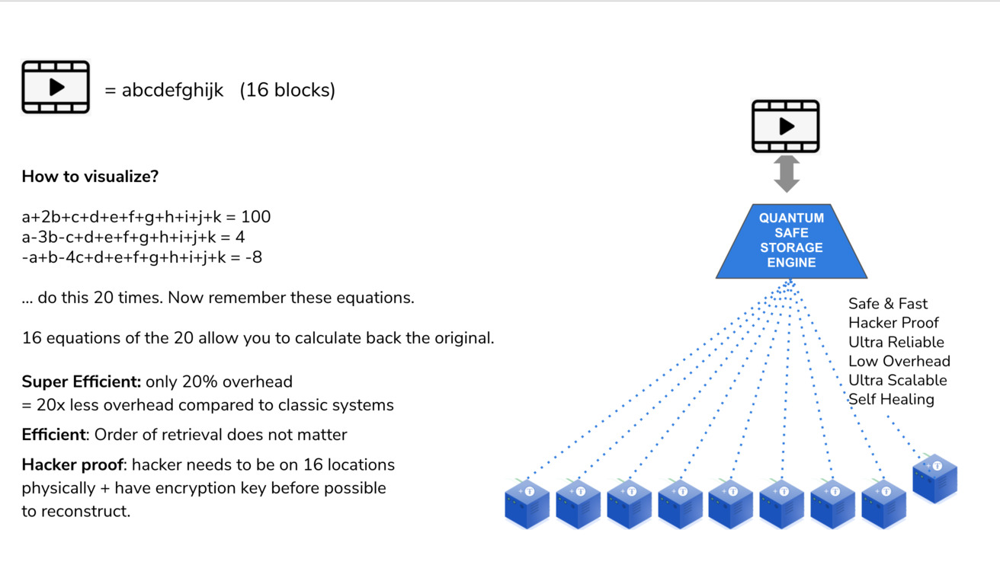
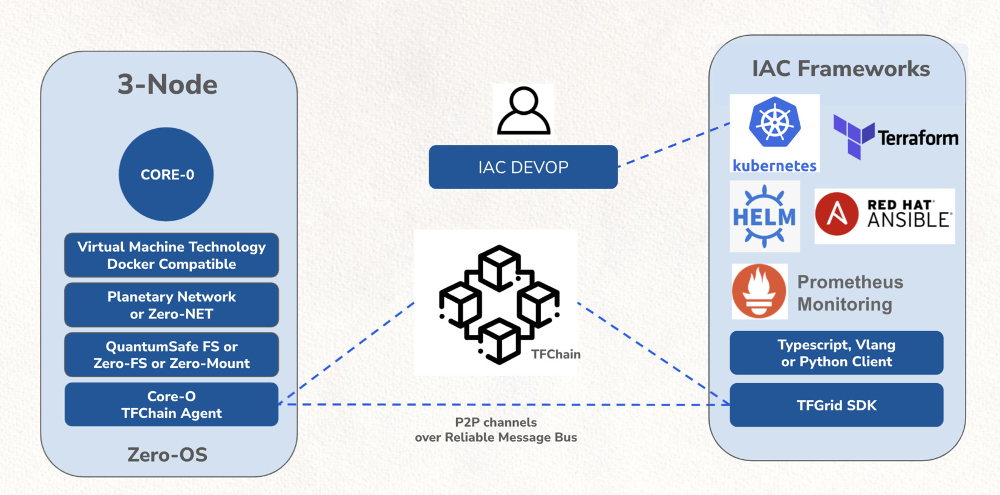

Technology

Solution
Suggestion Solution
Implementing good enough pruning for Casper Labs is not a trivial task.
We believe that we have to put it in 2 phases, 1 phase is for research and proof of concept which can be used generically and proves the concept of a global pruning layer.
The 2nd phase should be for another grant of other collaboration effort to put it inside the storage engine of Casper Blockchain and work closely together with the engineers of Casperlabs.
Phase 1 Solution (this grant)
A pruning DB, writing on global level to hundreds of backends in such a way the performance stays high, the data cannot be corrupted, the data can be self-healed when needed. Demonstrate how a pruning DB can be a super efficient backend storage layer for a blockchain like Casper Labs.
Solution see architecture.
Proof Points
- create a global accesible data lake for a blockchain which is deployed in 100 locations and only 20 nodes are needed to retrieve the data.
- Prove that 80 nodes can be offline and data can still be retrieved.
- Prove that 100 TB of data can be stored this way using 1 Pruning DB.
- Make test scripts which show how performance is high for the key value stor and stays high independent of size of DB. We will test with 100 TB.
- Show how multiple Prune DB's at the same DB can read the data when not in cache from the same data lake.
- prove that 100 MB/sec can be achieved towards backend (if enough bandwidth available)
- show how data gets encrypted and distributed in such a way that even for a serious hacker it would be hard to do something with the data.
- this effort goes together with another grant which is the deployment of such a system on top of TFGrid in all scalability and with a consensus driven deployment mechanism.
- All the code delivered is opensource.
Future Grants
Integration in Casperlabs Blockchain Backend
- show how seamless pruning can be implemented in POC using the blockchain engine
- this is a serious job and will require quite some effort to make sure it happens in the safest way and gets well tested.
- this will require low level integration so that the data paths dont change to much.
- Use the Blockchain layer to also prove authenticity of the pruning storage layer (is an extra check, not strictly needed, but might give extra confidence to community).
Production Readyness & Testing
Testing this new pruning layer in all its facets on performance and reliability level.
Master-Slave Solution for pruning DB
- Make Pruning DB Redundant (active-active or active-passive)
- Show how there is never a reliability issue, create good test cases to show this redundancy.
Architecture (this grant)
graph TD
A[Blockchain Engine] -->|Offload Data| B(Prune DB)
B -->|WRITE PATH| C{TF FLECC Codec}
C -->|One| D[NODE 1]
C -->|Two| E[NODE 2]
C -->|Three| F[NODE 3]
C -->|Hundred| G[... 100 NODES]
For write path we write to e.g. 100 nodes, all over the world. This amount is configurable and also the storage policy used.
Default we could use like 20 + 80, means min 20 nodes are needed to re-create the original. This means upto 60 nodes can be lost before data is lost.
The Prune DB
Is a fast key value stor which can be used as backend for the storage engine of the blockchain for pruning support.
This key value stor will write in local DB's (storage containers see further) which are configurable in size and can be possitioned on storage system of choice, we recommend SSD.
The storage containers are cacheable, once written they can be removed, if data is needed from a contaier it will be fetched back from the FLECC CODEC in a redundant way. This will make the Prune DB caching aware and can support petabytes easily.
graph TD
A[Blockchain Engine] -->|Offload Data| B(Prune DB)
B -->|Data| C(Storage Container 100 MB)
B --> D(Storage Container 100 MB)
B --> E(Storage Container 100 MB)
B --> X(metadate engine)
X --> F(Metadata DB 1 MB)
X --> G(Metadata DB 1 MB)
X --> H(Metadata DB 1 MB)
Above provides for a very scalable system, the metadata DB's and DATA DB's get offloaded using the FLECC Codec towards potentially thousands of nodes on the backend.
Self Healing (this grant)
The system should be full self healing, this means if nodes get offline, or there is data rot (corrupted data), the data needs to be corrected automatically and redistributed so that we get back to the original health of the data in line with original policy.
Corruption Proof
Data should not be able to get corrupted, once corruption occurs because of network or storage subsystem the codec needs to be able to recover it right away.
The write path is redundant
graph TD
A[Blockchain Engine] -->|Offload Data| B(Prune DB)
B -->|RAFT CONSENSUS| C{TF FLECC Codec}
B -->|Only 1 MASTER| D{TF FLECC Codec}
B -->|CONSENSUS| E{TF FLECC Codec}
B -->|CONSENSUS| F{TF FLECC Codec}
B -->|UPTO 9 is ok| G{TF FLECC Codec}
The Consensus layer for write ath will be based on Tendermint (or alternative if CasperLabs has suggestions).
The Pruning DB creates storage containers of 1-100 MB in size (configurable). Each Storage Container gets put in separate file if a configurable time interval got passed or a certain size for the storage container, default 100 MB.
Redundancy for Prude DB
We will not make the Pruning DB active-active but this can be done as part of the next grant. For now the pruning DB will write the storage containers with data and metadata. If the node on which we do the activiation of the pruning dies then that pruning action will have to be restarted.
Active-Passive clustering can be build inside the Pruding DB.
graph TD
A[Blockchain Engine] -->|Offload Data| B(Master Prune DB)
B --> |Synchronous need good network| C(Secondary Prune DB)
B --> D(Secondary Prune DB)
Only one pruning DB is active, if the master is down, a Raft mechanism might be used (next grant) to define which DB becomes the new master.
Each Zeros-Node can store 500 TB.
graph TD
F{TF FLECC Codec} --> A(NODE 1 HD ZDB)
F{TF FLECC Codec} --> B(NODE 1 HD ZDB)
F{TF FLECC Codec} --> C(NODE 1 HD ZDB)
100+ ZDB's can be used by 1 codec, the codec will make sure that data is spread out good enough.
Read Path
The read path is different and redundant by design. Thanks to the FLECC Codec we can read data from hundred of sources and this can happen by many readers at the same time.
graph TD
P1(Prune DB US) ---|READ| F
P2(Prune DB CH) ---|READ| F
P3(Prune DB DUBAI) ---|READ| F
P4(Prune DB TORONTO) ---|READ| F
F{TF FLECC Codec} --- A(NODE 1 DUBAI HD ZDB)
F --- B(NODE 2 BE HD ZDB)
F --- C(NODE 3 US HD ZDB)
This leads to the fastest possible way how to retrieve data so the prune DB can retrieve the data it needs.
Once a storage container is retrieved it will stay in cache untill no longer needed.
The caching layer needs to be intelligent to delete the right files as much as possible.
Read Optimization (Grant Future)
We can implement a system which will allow a faster retrievel, in the suggested system we only need to retrieve 20 files from the 100 ZDB's (backend DB's), what if the system would be smart enough to figure out which files to retrieve first and depending who answers fastest the data can be rebuild to have back the original data. It could work with e.g 50 of the 100, the first 20 who deliver allow the data to be retrieved, this would dramaically speed up retrieval and data would come from latency locations close by.
Quantum Safe Storage System Benefits
ThreeFold would start from our existin QSSS (Quantym Safe Storage System) to deliver what Casper Labs requires, we would use and extend our existing codebase.
QSFS stands for Quantum-Safe File System. It is a redundant storage system, which can store petabytes of information.
Unique features are :
- Unlimited scalable (many petabytes)
- Data is spread over many devices owned by different, independent hardware owners called farmers. Together, these farmers provide the capacity to a hardware grid, call the ThreeFold Grid.
- Dispersion over multiple sites ensures 100% privacy of the data, as no farmer knows what the data is about (zero knowledge storage system). Even a quantum computer cannot decrypt the data on a node, as one node contains insufficient information to unambiguously recreate the authentic data.
- Data can’t be lost: there is a protection for datarot, data will auto-repair.
- Data is append-only and immutable by design of the protocol, so it’s fit for storing ledger history. Even with sites going down, data is not lost with ‘operational’ backup nodes in place.
- Up to 10x more efficient than storing on classic storage cloud systems. Overhead of about 20% is sufficient to have a secure archive.
- Self-healing: when node or disk lost, storage system can get back to original redundancy level.
- Helps with compliance to privacy regulations like GDPR (as the hosting facility has no view on what is stored, information is encrypted and incomplete).
- Hybrid : can be installed onsite, public, private, ...
- Read-write caching on encoding node (the front end).
Technology
i
Quantum Safe Storage System
Imagine a storage system with the following benefits
This is not a dream but does exist and is the underpinning of the TFGrid.
Our storage architecture follows the true peer-to-peer design of the TF grid. Any participating node only stores small incomplete parts of objects (files, photos, movies, databases...) by offering a slice of the present (local) storage devices. Managing the storage and retrieval of all of these distributed fragments is done by a software that creates development or end-user interfaces for this storage algorithm. We call this 'dispersed storage'.

Peer2peer provides the unique proposition of selecting storage providers that match your application and service of business criteria. For example, you might be looking to store data for your application in a certain geographic area (for governance and compliance) reasons. Also, you might want to use different "storage policies" for different types of data. Examples are live versus archived data. All of these uses cases are possible with this storage architecture and could be built by using the same building blocks produced by farmers and consumed by developers or end-users.
Quantum Safe Storage Algoritm

The Quantum Safe Storage Algorithm is the heart of the Storage engine. The storage engine takes the original data objects and creates data part descriptions that it stores over many virtual storage devices (ZDB/s)

Data gets stored over multiple ZDB's in such a way that data can never be lost.
Unique features
- data always append, can never be lost
- even a quantum computer cannot decrypt the data
- is spread over multiple sites, sites can be lost, data will still be available
- protects for datarot
Why
Today we produce more data than ever before. We could not continue to make full copies of data to make sure it is stored reliably. This will simply not scale. We need to move from securing the whole dataset to securing all the objects that make up a dataset.
ThreeFold is using space technology to store data (fragments) over multiple devices (physical storage devices in 3Nodes). The solution does not distribute and store parts of an object (file, photo, movie...) but describes the part of an object. This could be visualized by thinking of it as equations.
Details
Let a,b,c,d.... be the parts of that original object. You could create endless unique equations using these parts. A simple example: let's assume we have 3 parts of original objects that have the following values:
a=1
b=2
c=3
(and for reference that part of real-world objects is not a simple number like 1 but a unique digital number describing the part, like the binary code for it 110101011101011101010111101110111100001010101111011.....). With these numbers we could create endless amounts of equations:
1: a+b+c=6
2: c-b-a=0
3: b-c+a=0
4: 2b+a-c=2
5: 5c-b-a=12
......
Mathematically we only need 3 to describe the content (=value) of the fragments. But creating more adds reliability. Now store those equations distributed (one equation per physical storage device) and forget the original object. So we no longer have access to the values of a, b, c and see and we just remember the locations of all the equations created with the original data fragments. Mathematically we need three equations (any 3 of the total) to recover the original values for a, b or c. So do a request to retrieve 3 of the many equations and the first 3 to arrive are good enough to recalculate the original values. Three randomly retrieved equations are:
5c-b-a=12
b-c+a=0
2b+a-c=2
And this is a mathematical system we could solve:
- First:
b-c+a=0 -> b=c-a - Second:
2b+a-c=2 -> c=2b+a-2 -> c=2(c-a)+a-2 -> c=2c-2a+a-2 -> c=a+2 - Third:
5c-b-a=12 -> 5(a+2)-(c-a)-a=12 -> 5a+10-(a+2)+a-a=12 -> 5a-a-2=2 -> 4a=4 -> a=1
Now that we know a=1 we could solve the rest c=a+2=3 and b=c-a=2. And we have from 3 random equations regenerated the original fragments and could now recreate the original object.
The redundancy and reliability in such system comes in the form of creating (more than needed) equations and storing them. As shown these equations in any random order could recreate the original fragments and therefore redundancy comes in at a much lower overhead.
Example of 16/4

Each object is fragmented into 16 parts. So we have 16 original fragments for which we need 16 equations to mathematically describe them. Now let's make 20 equations and store them dispersedly on 20 devices. To recreate the original object we only need 16 equations, the first 16 that we find and collect which allows us to recover the fragment and in the end the original object. We could lose any 4 of those original 20 equations.
The likelihood of losing 4 independent, dispersed storage devices at the same time is very low. Since we have continuous monitoring of all of the stored equations, we could create additional equations immediately when one of them is missing, making it an auto-regeneration of lost data and a self-repairing storage system. The overhead in this example is 4 out of 20 which is a mere 20% instead of (up to) 400%.
Content distribution Policy (10/50)
This system can be used as backend for content delivery networks.
Imagine a movie being stored on 60 locations from which we can loose 50 at the same time.
If someone now wants to download the data the first 10 locations who answer fastest will provide enough of the data parts to allow the data to be rebuild.
The overhead here is much more compared to previous example but stil order of magnitude lower compared to other cdn systems.
Datarot
Datarot cannot happen on this storage system
Fact that data storage degrades over time and becomes unreadable, on e.g. a harddisk. The storage system provided by ThreeFold intercepts this silent data corruption, making that it can pass by unnotified.
see also https://en.wikipedia.org/wiki/Data_degradation
Zero Knowledge Proof
The quantum save storage system is zero knowledge proof compliant. The storage system is made up / split into 2 components: The actual storage devices use to store the data (ZDB's) and the Quantum Safe Storage engine.

The zero proof knowledge compliancy comes from the fact the all the physical storage nodes (3nodes) can proof that they store a valid part of what data the quantum safe storage engine (QSSE) has stored on multiple independent devices. The QSSE can validate that all the QSSE storage devices have a valid part of the original information. The storage devices however have no idea what the original stored data is as they only have a part (description) of the origina data and have no access to the original data part or the complete origal data objects.
TFGrid Compute Layer

We are more than just Container or VM technology, see our Beyond Container Document.
For more information see ZeroOS
Research
The problem: Forever growing data
Definition from the wiki: "A blockchain is a growing list of records, called blocks, that are linked together using cryptography. Each block contains a cryptographic hash of the previous block, a timestamp, and transaction data (generally represented as a Merkle tree). The timestamp proves that the transaction data existed when the block was published in order to get into its hash. As blocks each contain information about the block previous to it, they form a chain, with each additional block reinforcing the ones before it. Therefore, blockchains are resistant to modification of their data because once recorded, the data in any given block cannot be altered retroactively without altering all subsequent blocks."
Therefore blockchains by design create and carry historical data forever. The nature of a blockchain is that it stores data immutably and in an always-append manner. So from the moment of inception of a blockchain (the "genesis" block) to the current point in time (the latest block) all data (blocks) ever created need to be stored on and available on a sufficient set of (full) nodes to ensure the life of the chain.
This has profound implications for successful blockchains, regardless of their purpose. Whether the blockchain is a pure value transaction blockchain or it is a smart contract system with additional data storage requirements, it is all compounding to a forever growing storage requirement. To the extent that the data grows faster than the storage purchasing power of node operators, this becomes a centralizing force as fewer network participants can afford to host the whole chain.
There are two main categories of blockchains, each with specific benefits and disadvantages: permissionless and permissioned blockchains. The first allows anyone to take part and start contributing to the network, the latter having a (central) authority that agrees who can participate and who not. Both types of blockchains have the same challenge with regards to data storage: it is a forever growing chain of blocks which increases the storage needs of participating nodes indefinitely, but pruning solutions are very different because of the following:
- in a permissionless blockchain anyone can choose to participate to help to run and secure the blockchain by operating a blockchain node. Consensus and trust is based on an algorithm, not on any central authority.
- in a permissioned blockchain there is a central authority of some sort that allows blockchain nodes to be added to the network. The central authority provides trust and to a degree consensus.
So the blockchain pruning challenge is many times larger for permissionless chains then for permissioned chains.
Evidence of the problem statement
Overview (not exhaustive) of what the current blockchains experience in terms of data growth and the challenges that come with it at the current state of play of blockchain projects:
Reading through these articles we can find chain size growth figures of 50x over a period of 2 years. And with the exponential growth and adoption of blockchain technologies this is a real problem that lies ahead of us which is not going to be solved by the rate of which hardware is improving and becoming more affordable.
|
Analysis
The current solutions to the forever growing data storage requirements to not tackle the real problem: How can we prune a (any) blockchain protocol without putting limitations and restrictions on the protocol itself but provide a storage utility that is trustworthy and builds on the principles provided by the blockchain protocol without changing them?
Current solutions to forever growing data in blockchains
A non-exhaustive list of ways to deal with the data growth issue is:
- Compress data: keep storing data as is but lower the impact / footprint of it.
- Lower the number of full nodes in a blockchain: make the number of nodes smaller in order to have less copies of the data distributed which lowers the synchronization requirements (to retain a high transaction speed) and limit the overall hardware needed to operate the full nodes. This can be done by staking mechanisms and creating a set number of full nodes available in a chain.
- Create a hierarchy of nodes: split the blockchain functionality in components that together make up the full blockchain.
- Shard the blockchain: split the chain itself into smaller pieces that communicate through a single coordination chain
All of these solutions have their disadvantages and none of the solutions solve the basic problem.
blockchain sharding
The practice of splitting a blockchain into multiple segments is known as sharding. This feature is planned for Ethereum 2.0 and is already live on the Zilliqa network. Sharding is presented as an emerging solution to the blockchain trilemma.
| Strengths |
|---|
| Reduces both the storage and computational load of nodes securing each shard, thus improving scalability and decentralization. Could provide better security than multichain ecosystems which appear to have a similar structure. |
| Weaknesses |
|---|
| Sharding is still an experimental technology with limited testing. Adding sharding to an existing blockchain requires significant changes to the protocol itself. |
| Opportunities |
|---|
| If successful, sharding can be a powerful feature and may find wide adoption among blockchains. Node operators on these chains still stand to benefit from distributed archiving of their shard. |
| Threats |
|---|
| This is a complex addition to a protocol that comes with certain tradeoffs and adds additional attack surface. |
Lower the number of full nodes in a blockchain
Full nodes refer to blockchain nodes that contain and have 100% of the chain history available online with a complete history intact, true and secure for the whole chain. In order to control the quantity and quality of the nodes that make up the chain some project restrict participation to only known entities. This is often referred to as a "permissioned" chain. A few permissioned organizations (or people) are tasked to provide full nodes and deal with all the operational, security, scaling and reliability tasks. This can be with and without a rewards for doing so.
Non-permissioned nodes can be allowed to alleviate some of the operational workload, but these nodes are not considered to be authoritative for the true chain history. The true chain history is only provided by the (few) permissioned (full) chain nodes. This solution is chosen by protocol implementations to circumvent the problem, by having node operators that commit to put the investment in to have proper node sizing.
SWOT analysis
| Strengths |
|---|
| Efficient way of guaranteeing correct, secure and scalable chain operations |
| Weaknesses |
|---|
| It steps away from the decentralization benefit a blockchain presents over traditional database solutions. The strength of a blockchain solution is that anyone can opt in to contribute and help to achieve security and safety. By making blockchains permissioned the security and safety is lowered because the full nodes are operated by a set number of organizations and people |
| One node still has the full volume required, which makes running it and managing the issues around very big volumes still relevant. |
| Opportunities |
|---|
| Create a governance structure around blockchain technology that is in line with the traditional IT industry and paradigms while still bringing forward the innovation achieved by blockchain technology. |
| Threats |
|---|
| Secure operations is threated by having a limited, known number of permissioned operators. The form a set of single points of failure for the whole chains operations and security. |
Compress data
This is probably the most used method to solve the issue. All participating archival nodes compress the blocks created to minimize the data storage footprint. There are many compression algorithms available and depending on the specific type of blockchain hardware certain algorithms present better options than others.
SWOT analysis
| Strengths |
|---|
| Simple to implement, plenty of compression algorithms available |
| Weaknesses |
|---|
| it does not solve the issue, it postpones the issue becoming a problem. |
| Opportunities |
|---|
| Quick to implement, quick to deploy. |
| Threats |
|---|
| The storage problem will sooner or later appear. Choosing this solution will allow you to go to market quickly but then you have to hope that a solution will present itself before the issue will become a problem. |
A hierarchy of nodes
Another way to overcome this issue is to have a blockchain split the full chain process (workload) into subprocesses. Each subprocess can now be worked on by specific type of nodes that are tailored to operate that one part of the process. Examples are:
- Transaction nodes: a node that only provides transaction capabilities and possibly store the results
- Validator nodes: nodes that look at the transaction nodes and validates transaction through some sort of consensus mechanism
- Core/full nodes: nodes that store the full chain history and are authoritative for chain content
- Edge nodes: remote nodes that perform edge transaction in a fast and efficient way. There has to be some form of synchronization between edge nodes and core/full nodes.
By creating different nodes type the requirements for storage per node (type) are lowered.
SWOT analysis
| Strengths |
|---|
| provides independent scalability between different functions / processes off the full chain. |
| Weaknesses |
|---|
| Overhead is created by relying on the network to communicate between the different functions/subprocesses. Network speed might effect overall performance on the chain |
| Opportunities |
|---|
| when required subprocess's can easily be broken up into smaller pieces when needed or vice versa integrated into large components. |
| Threats |
|---|
| Many different components have network interfaces and there are is a realistic chance that hackers might attack the network interfaces from the different nodes. |
A new way how to store data using forward looking correcting codes
This is what ThreeFold has been working on for a long time, the original solution was created by our team back in 2012 and was part of an exit of 300m USD. The software we have today is a completely new version and is even faster and more scalable.
Casper uses LMDB
CasperLabs uses LMDB which provides some features we can tap into to provide pruning support.
LMDB is a big file on a filesystem and as such its hard to use some storage tricks on the quantum safe filesystem to implement pruning on that level.
To succeed with pruning on casperlabs we have to integrate in the storage layer itself, probably in the code of casperlabs itself which complicates this project.
Lightning Memory-Mapped Database Manager (LMDB)
LMDB is a Btree-based database management library modeled loosely on the BerkeleyDB API, but much simplified. The entire database is exposed in a memory map, and all data fetches return data directly from the mapped memory, so no malloc's or memcpy's occur during data fetches. As such, the library is extremely simple because it requires no page caching layer of its own, and it is extremely high performance and memory-efficient. It is also fully transactional with full ACID semantics, and when the memory map is read-only, the database integrity cannot be corrupted by stray pointer writes from application code.
The library is fully thread-aware and supports concurrent read/write access from multiple processes and threads. Data pages use a copy-on- write strategy so no active data pages are ever overwritten, which also provides resistance to corruption and eliminates the need of any special recovery procedures after a system crash. Writes are fully serialized; only one write transaction may be active at a time, which guarantees that writers can never deadlock. The database structure is multi-versioned so readers run with no locks; writers cannot block readers, and readers don't block writers.
Unlike other well-known database mechanisms which use either write-ahead transaction logs or append-only data writes, LMDB requires no maintenance during operation. Both write-ahead loggers and append-only databases require periodic checkpointing and/or compaction of their log or database files otherwise they grow without bound. LMDB tracks free pages within the database and re-uses them for new write operations, so the database size does not grow without bound in normal use.
The memory map can be used as a read-only or read-write map. It is read-only by default as this provides total immunity to corruption. Using read-write mode offers much higher write performance, but adds the possibility for stray application writes thru pointers to silently corrupt the database. Of course if your application code is known to be bug-free (...) then this is not an issue.
See on internet: LMDB